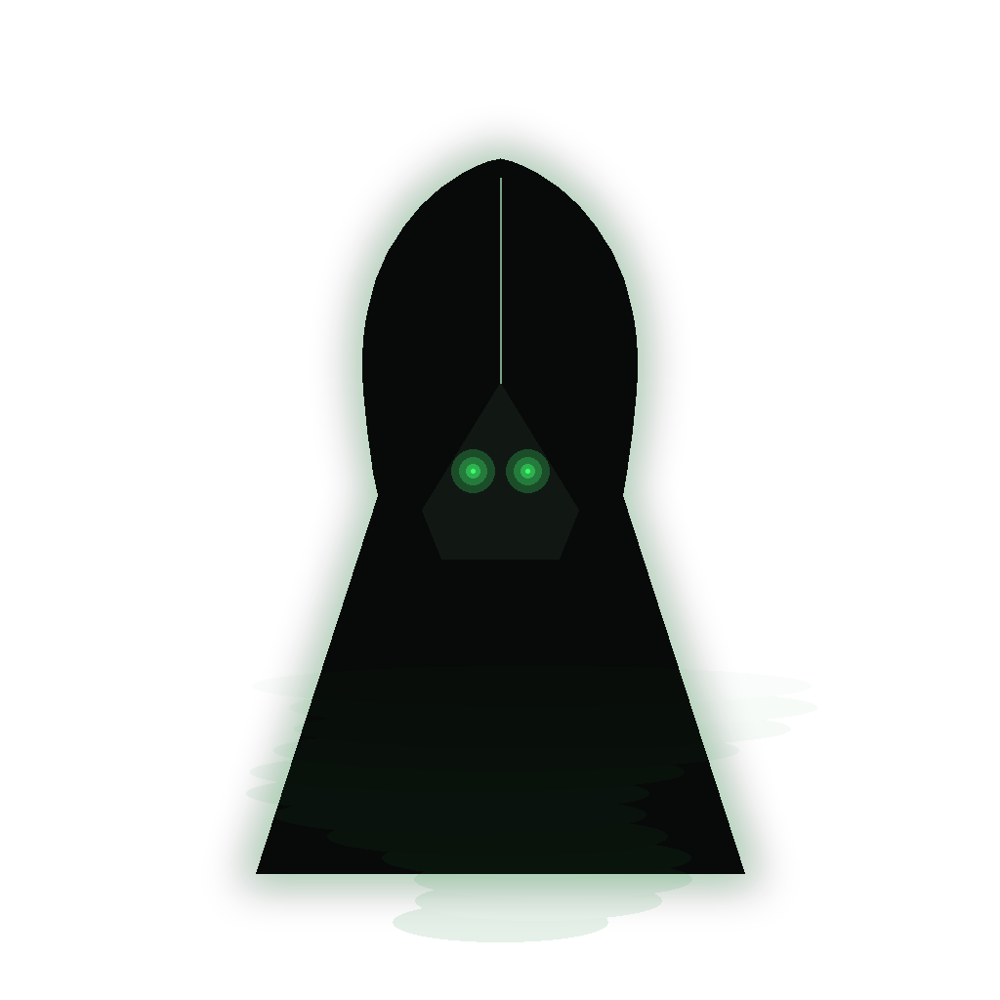

Stories of Helheimr
Helheimr's lore survives chiefly in Snorri's Gylfaginning and in the poems of the Poetic Edda, and the two sources share a consistent picture: a fenced realm of halls and high gates where the dead continue a diminished existence — fed from Hunger, cut with Famine — until the world's ending and, for some, beyond it.
When Baldr is slain by the mistletoe dart, the gods' grief is so great that Frigg asks for a volunteer to ride to Hel and ransom her son. Hermóðr takes Óðinn's horse Sleipnir and rides nine nights through valleys so deep and dark he sees nothing, until he comes to the river Gjöll and the bridge shining with gold. The maiden Móðguðr who guards it demands his name and lineage, and tells him that five companies of dead men crossed yesterday, yet did not make the bridge thunder as he does — the living ride heavier than the dead. Hermóðr rides on to Hel's gate, which Sleipnir clears at a leap, and finds Baldr seated in the highest seat of the hall. Hel's answer is conditional and exact: Baldr may return if every being in the nine worlds weeps for him. All weep — all but one giantess in a cave, Þökk ('Thanks'), widely taken to be Loki, who answers: let Hel hold what she has. The embassy fails by a single withheld tear, and the myth makes Helheimr a realm of law: even grief must be unanimous to undo death.
Snorri describes Hel herself and then her household, and the household list is a small masterpiece of Norse understatement. The goddess is half the colour of living flesh and half corpse-blue — easily recognised, he notes, from a distance. Her hall is Éljúðnir, 'Sprayed-with-Sleet'; her dish is called Hunger and her knife Famine; her serving-man is Gangláti, her maid Ganglöt, names that shuffle like reluctant feet; her bed is Kör, 'sick-bed,' and its curtains Blíkandaböl, 'gleaming calamity' (Prose Edda, Gylfaginning 34, in Faulkes's translation). This is not the torture-chamber of later Christian imagination; nothing here is actively done to the dead. The furnishings of Helheimr describe instead existence at minimum maintenance — a household where the table is set with the absence of food, and even the bed is named for illness. The Norse underworld punishes the unheroic dead the way life itself does: by diminution, not by fire.
Every underworld entrance in Norse verse has its guardian, and Helheimr's is a hound. Grímnismál (4) fixes his station at the cliff-cave Gnipahellir, fettered and baying; Völuspá rings the change at each stage of the world's ending with the same refrain — 'Garmr bays loudly before Gnipahellir; the rope will break and the wolf run free' (Völuspá 44) — so that a chained dog's howl becomes the countdown of Ragnarök. Snorri gives the hound his release and his duel: at the last battle Garmr comes loose and fights the one-handed Týr, and the two kill each other (Gylfaginning 51). Modern scholarship (Lindow, Simek) has long debated whether Garmr is a second wolf — a doublet of the bound Fenrir — or a distinct beast of the same apocalyptic kennel, and the sources themselves distribute the doom-signals freely among Garmr, Fenrir, and the pursuing wolves Skǫll and Hati without ever reconciling the roster. The image needs no reconciliation to work: in Norse cosmology every chain is a countdown, and the hound of Hel holds the first of them.
Not all of Helheimr is grey continuation. Völuspá (38–39) walks to the shore of Náströnd, the 'corpse-strand': there stands the hall of the faithless with its doors facing north, poison dripping from the roof, and into it wade the perjurer and the murderer and the man who lies with another's wife, while the dragon Níðhǫggr sucks the corpses of the dead. Here is a genuine Norse moral geography — the everyday dead continue quietly, but the oath-breakers get a shoreline. Yet the poems refuse to let even this realm be final. After Ragnarök, Vafþrúðnismál promises, the gods will find their golden gaming-pieces lying in the grass again (Vafþrúðnismál 51); and Snorri adds that Baldr and Höðr will come back from Hel and sit together in judgment in the reborn world (Gylfaginning 53). Even the grey hall empties at the end. The Norse underworld, for all its sleet, is the rare pagan underworld whose door was imagined opening both ways.
The Grey Home of the Ordinary Dead
Helheimr — 'Hel's home' — is the grey underworld of Old Norse myth, ruled by the goddess Hel, daughter of Loki and the giantess Angrboða. Lying downward and northward, guarded by the hound Garmr and reached over the bridge Gjallarbrú, it receives the great majority of the dead: those who die of sickness, age, or accident rather than by the sword.
Éljúðnir is the hall of Hel, where the dead are fed from Hunger and cut with Famine.
The bridge over the river Gjöll is guarded by Móðguðr, who tests every soul entering Helheimr.
The bloody hound who guards the entrance to Helheimr waits at Gnipahellir for the end times.
Unlike Valhöll, Helheimr receives those who die of sickness, age, or accident—the quiet destiny of most mortals.
From the original script to the living URL
ᚼᛁᛚᚼᛁᛘᚱ
The name in its original Norse form. Helheimr (ᚼᛁᛚᚼᛁᛘᚱ) is attested in the source tradition — “Hel's home (from Hel + heimr)”. Its original diacritics and script distinctions carry the full phonetic and orthographic weight of the source tradition.
helheimr
The plain helheimr form is identical to the Unicode restoration. Because this name is already written in Latin letters, no diacritics, stress, or script information were lost — only capitalization differs.
Helheimr
The Unicode restoration does not need to recover lost marks for Helheimr. Its value is canonical spelling and consistent cataloguing, not the reconstruction of erased orthography. The domain is readable as-is to both DNS and humanity.
Helheimr.com
This restoration is written entirely in ASCII letters — no Punycode encoding stands between Helheimr and the DNS. The domain reads identically to machines and to human eyes.
Owned, ideal, and ASCII forms of Helheimr
Helheimr
Restores ᚼᛁᛚᚼᛁᛘᚱ. The live temple domain — helheimr.com.
How Helheimr was spoken
How Helheimr travels from ancient script to the modern URL
Old Norse Helheimr; from Hel, goddess of the dead, + heimr “home"; the realm of the dead.
Realm of the Dead
The Unicode restoration Helheimr uses registrable Thorn and vowel accents; the runic form is not used because runic TLD support is impractical.
Helheimr is the afterlife of the unheroic — and that is its quiet profundity. The Norse did not promise most people a better world; they promised most people a grey hall, a dish named Hunger, a knife named Famine, and continuation without glory. Beside Valhöll's eternal tournament, Helheimr looks like a demotion. But the poems keep returning to it: it is the destination of Baldr, the best of the gods, and the only realm whose door both Óðinn and Hermóðr must knock on.
Enter Extended Lore